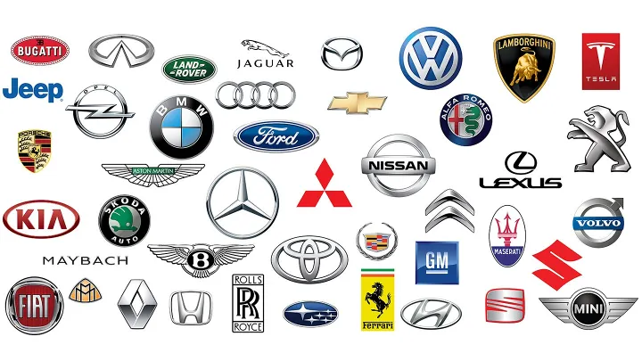

Best car brands and their vehicles!
-------------------------------------------------------------------------------------------
Lexus
Mercedes
BMW
Toyota
Tesla
-------------------------------------------------------------------------------------------
